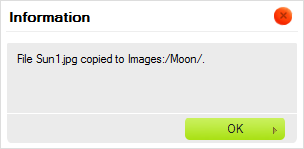

Panel plik籀w pokazuje wszystkie pliki dost?pne w wybranym folderze.
Panel plik籀w mo髒e prezentowa? pliki za pomoc? jednego z dw籀ch r籀髒nych format籀w wy?wietlania zale髒nych od ustawie? CKFindera (patrz "Ustawienia "). Poni髒ej znajduje si? por籀wnanie widok籀w Miniaturek oraz Listy dla tego samego folderu.
Je?li CKFinder zostanie skonfigurowany by korzysta? z widoku Miniaturek (Thumbnails), pliki zostan? wy?wietlone w postaci miniaturek (niewielkich podgl?d籀w lub ikon), z dodatkowymi informacjami takimi jak nazwa pliku, jego rozmiar lub data modyfikacji b?d驕 bez nich (w zale髒no?ci od ustawie?).

Je?li CKFinder zostanie skonfigurowany by korzysta? z widoku Listy (List), pliki zostan? wy?wietlone w postaci listy, z dodatkowymi informacjami takimi jak nazwa pliku, jego rozmiar lub data modyfikacji b?d驕 bez nich (w zale髒no?ci od ustawie?).

W celu aktywowania pliku i uczynienia go "plikiem bie髒?cym" w CKFinderze nale髒y klikn?? nazw? pliku lub jego miniaturk?. By ?atwiej by?o wybra? plik, kiedy kursor myszy znajdzie si? nad plikiem, jego t?o zostanie tymczasowo pod?wietlone. Po aktywowaniu pliku zostanie on na sta?e pod?wietlony za pomoc? innego koloru t?a.
Poni髒szy rysunek prezentuje r籀髒ne stany pliku ogl?danego w folderze, od odznaczonego poprzez pod?wietlony przez najechanie kursorem myszy po aktywowany (wybrany).
 |
 |
 |
W celu odznaczenia pliku nale髒y klikn?? inny plik (tym samym aktywuj?c go) lub klikn?? w dowolne puste miejsce wewn?trz panelu plik籀w CKFindera.
W celu skopiowania pliku do innego folderu nale髒y wybra? plik i przeci?gn?? go nad folder docelowy w panelu folder籀w. Po upuszczeniu pliku nad nazw? folderu docelowego nale髒y wybra? opcj? Skopiuj plik tutaj (Copy File Here) z menu kontekstowego.

Plik zostanie zduplikowany, a jego kopie umieszczona b?dzie w folderze docelowym. Zawarto?? folderu 驕r籀d?owego nie zmieni si?.

Uwaga: Je?li plik o tej samej nazwie istnieje ju髒 w folderze docelowym, zostaniesz poproszony o wyb籀r pomi?dzy nadpisaniem istniej?cego pliku a automatyczn? zmian? kopiowanego pliku (to drugie jest opcj? domy?ln?).

W celu przeniesienia pliku do innego folderu nale髒y wybra? plik i przeci?gn?? go nad folder docelowy w panelu folder籀w. Po upuszczeniu pliku nad nazw? folderu docelowego nale髒y wybra? opcj? Przenie? plik tutaj (Move File Here) z menu kontekstowego.

Plik zostanie usuni?ty z folderu 驕r籀d?owego i dodany do zawarto?ci folderu docelowego.
Operacje zaawansowane mo髒na wykonywa? na pliku za pomoc? jego menu kontekstowego. W zale髒no?ci od okoliczno?ci nast?puj?ce opcje mog? by? dost?pne:

Uwaga: Niekt籀re opcje menu kontekstowego mog? by? wy??czone (i tym samym wyszarzone) w zale髒no?ci od konfiguracji CKFindera ustawionej przez administratora systemu.
W celu wybrania pliku za pomoc? menu kontekstowego nale髒y u髒y? opcji Wybierz (Select). Alternatywnie mo髒na r籀wnie髒 dwukrotnie klikn?? plik za pomoc? myszy.
W zale髒no?ci od ?rodowiska, w kt籀rym wykorzystywany jest CKFinder, operacja wyboru mo髒e, na przyk?ad, przes?a? adres URL pliku do innej aplikacji lub wstawi? obrazek bezpo?rednio do artyku?u tworzonego w systemie CMS.
W celu zobaczenia pliku w przegl?darce internetowej nale髒y wybra? opcj? Zobacz (View) z menu kontekstowego. Nie dla wszystkich typ籀w plik籀w mo髒na uzyska? podgl?d w przegl?darce, jednak opcja ta przydaje si? w przypadku obrazk籀w, tekstu oraz plik籀w PDF. W pozosta?ych przypadkach przegl?darka poprosi Ci? o wyb籀r aplikacji do otwarcia pliku.
W przypadku podgl?du obrazk籀w CKFinder wy?wietli obrazek w oknie wyskakuj?cym opartym na efekcie lightboxa.
W celu pobrania pliku nale髒y wybra? opcj? Pobierz (Download) z menu kontekstowego. Przegl?darka zapyta o lokalizacj? do zapisu pobranego pliku na Twoim komputerze. W zale髒no?ci od ustawie? przegl?darki oraz systemu operacyjnego plik b?dzie mo髒na otworzy? natychmiast po pobraniu za pomoc? odpowiedniej aplikacji Twojego komputera.
W celu zmiany rozmiaru obrazka lub jego miniaturki nale髒y wybra? opcj? Zmie? rozmiar (Resize) z menu kontekstowego. Po wprowadzeniu nowych rozmiar籀w lub wybraniu wielko?ci miniaturki nale髒y zamkn?? okno dialogowe w celu zapisania zmian.

Je?li obrazek jest zbyt du髒y, mo髒na zmieni? jego wymiary, wprowadzaj?c nowe warto?ci
do p籀l Szeroko?? (Width) oraz Wysoko?? (Height). Domy?lnie
proporcje obrazka s? zablokowane, co sygnalizowane jest ikon?  (Zablokuj proporcje). Oznacza to, 髒e je?li zmienisz jedn? z warto?ci d?ugo?ci
(szeroko?? lub wysoko??), druga zostanie automatycznie dostosowana.
(Zablokuj proporcje). Oznacza to, 髒e je?li zmienisz jedn? z warto?ci d?ugo?ci
(szeroko?? lub wysoko??), druga zostanie automatycznie dostosowana.
Je?li chcesz m籀c swobodnie zmienia? oba wymiary, kliknij ikon? Zablokuj proporcje
w celu jej odblokowania. Ikona ta zmieni si? teraz w  ,
a zmiana jednego z wymiar籀w nie poci?gnie za sob? automatycznej modyfikacji drugiego.
By ponownie zablokowa? proporcje obrazka, kliknij ikon? jeszcze raz.
,
a zmiana jednego z wymiar籀w nie poci?gnie za sob? automatycznej modyfikacji drugiego.
By ponownie zablokowa? proporcje obrazka, kliknij ikon? jeszcze raz.
Dop籀ki nie zapiszesz zmian, w ka髒dej chwili mo髒esz z ?atwo?ci? powr籀ci? do oryginalnego rozmiaru pliku, naciskaj?c
ikon?  (Przywr籀? rozmiar). Spowoduje ona przywr籀cenie rozmiaru obrazka do
pierwotnej wielko?ci. Oryginalna szeroko?? oraz wysoko?? pojawi? si? w odpowiednich
polach okna dialogowego.
(Przywr籀? rozmiar). Spowoduje ona przywr籀cenie rozmiaru obrazka do
pierwotnej wielko?ci. Oryginalna szeroko?? oraz wysoko?? pojawi? si? w odpowiednich
polach okna dialogowego.
Po zmianie wielko?ci obrazka mo髒esz zdecydowa? si? na zapisanie go pod t? sam? nazw?, nadpisuj?c istniej?cy plik. Pami?taj, 髒e operacji tej nie mo髒na odwr籀ci? i po zapisaniu pliku o zmodyfikowanych wymiarach nie b?dziesz w stanie przywr籀ci? jego oryginalnej wielko?ci. W celu nadpisania oryginalnego pliku pozostaw pole wyboru Utw籀rz nowy obrazek (Create a new image) odznaczone.

Mo髒esz r籀wnie髒 zapisa? zmodyfikowany obrazek w nowym pliku i pozostawi? orygina? bez zmian. Je?li
zaznaczysz pole wyboru Utw籀rz nowy obrazek (Create a new image), b?dziesz m籀g?
nada? zmodyfikowanemu obrazkowi now? nazw?. Domy?lnie CKFinder sugeruje, by zapisa? obrazek pod nazw?
zbudowan? z dotychczasowej nazwy pliku z dodatkiem nowych wymiar籀w (na przyk?ad: Sun1_100x100.jpg
przy oryginalnym pliku o nazwie Sun1.jpg i zmianie wymiar籀w do 100 pikseli szeroko?ci
i 100 pikseli wysoko?ci).

Kiedy zmiany s? gotowe, kliknij przycisk OK w celu zamkni?cia okna dialogowego. Je?li operacja zmiany rozmiaru obrazka powiedzie si?, wy?wietlony zostanie odpowiedni komunikat.

Je?li zmodyfikowany obrazek zosta? zapisany jako nowy plik, w folderze zobaczysz obok siebie obie wersje.

Uwaga: Wymiary oryginalnego obrazka mog? ogranicza? opcje dost?pne przy zmianie rozmiaru. Zmodyfikowane wymiary obrazka nie mog? by? wi?ksze od oryginalnych.
Opcj? zmiany rozmiaru obrazka mo髒na r籀wnie髒 wykorzysta? do wygenerowania pomniejszonych kopii obrazk籀w (miniaturek), kt籀rych mo髒esz potem u髒y? w artyku?ach publikowanych na swojej stronie internetowej lub w postach na blogu. Dzi?ki opcji zmiany wielko?ci miniatury administrator strony mo髒e ustawi? zdefiniowane wielko?ci miniaturek, kt籀re b?d? potem wykorzystywane przez u髒ytkownik籀w CKFindera. Oszcz?dzi Ci to konieczno?ci r?cznego wpisywania zmodyfikowanych warto?ci szeroko?ci i wysoko?ci dla ka髒dego obrazka, a tak髒e pozwoli zachowa? sp籀jne wymiary miniaturek na ca?ej stronie.
W celu u髒ycia jednej ze zdefiniowanych wielko?ci miniaturki wybierz opcj? Zmie? rozmiar (Resize)
z menu kontekstowego obrazka. W cz??ci Utw籀rz now? miniaturk? (Create a new thumbnail)
okna dialogowego zaznacz pola wyboru reprezentuj?ce po髒?dan? wielko?? (lub wielko?ci) miniaturki.
Je?li operacja zmiany rozmiaru miniaturki powiedzie si?, wy?wietlony zostanie odpowiedni komunikat.
Obrazki o zmodyfikowanej wielko?ci zostan? utworzone w tym samym folderze, a nowe pliki otrzymaj?
nazwy odpowiadaj?ce wybranej opcji miniaturki (z przyrostkami _large,
_medium oraz _small dodanymi do oryginalnej nazwy pliku).

Uwaga: Je?li obrazek jest mniejszy od kt籀rej? z dost?pnych opcji miniaturek (jak w przyk?adzie powy髒ej), niedost?pne opcje zostan? wyszarzone.
W celu zmiany nazwy pliku nale髒y wybra? opcj? Zmie? nazw? (Rename) z jego menu kontekstowego lub u髒y? klawisza F2. Wpisz now? nazw? pliku w oknie dialogowym, kt籀re zostanie wy?wietlone, nadpisuj?c obecn? nazw?. Po nadaniu plikowi nowej nazwy i zamkni?ciu okna nazwa pliku zmieni si?.

Nie wszystkie znaki mog? by? wykorzystywane w nazwach plik籀w oraz folder籀w ze wzgl?du
na ograniczenia system籀w, w kt籀rych dzia?a CKFinder. W?r籀d znak籀w, kt籀rych nie mo髒na
u髒y? w nazwach plik籀w b?d驕 folder籀w s?: \ / :
* ? " <
> oraz |.
Ostrze髒enie: Po zmianie nazwy pliku odno?niki prowadz?ce do niego i dodane na innych stronach przestan? dzia?a?. Z tego powodu nale髒y przy korzystaniu z tej opcji zachowa? ostro髒no??.
W celu usuni?cia pliku nale髒y wybra? opcj? Usu? (Delete) z menu kontekstowego pliku lub u髒y? klawisza Del. Niezb?dne b?dzie potwierdzenie ch?ci usuni?cia pliku w oknie dialogowym, kt籀re zostanie wy?wietlone. Po potwierdzeniu intencji i zamkni?ciu okna plik zostanie usuni?ty.
Ostrze髒enie: Operacja ta jest nieodwracalna. Po usuni?ciu pliku nie b?dziesz m籀g? go odzyska?.

Ostrze髒enie: Po usuni?ciu pliku odno?niki prowadz?ce do niego i dodane na innych stronach przestan? dzia?a?. Z tego powodu nale髒y przy korzystaniu z tej opcji zachowa? ostro髒no??.